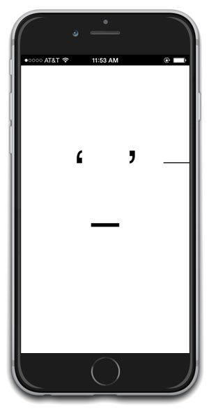

The OSX version is a standalone java-based application. Click anywhere to stop Multi. Click again to start Multi.
Screenshots of any particular arrangement can be made by pressing the. Click and drag on the right side to adjust the speed, drag up for faster. Screenshots of any particular arrangement with a screenshot.

On any iOS device, tap the screen to stop Multi. Tap again to start Multi. Tap and drag on the right side to adjust the speed, drag up for faster. Screenshots of any particular arrangement can be made by pressing the